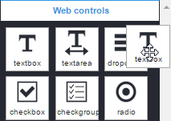
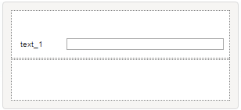
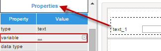
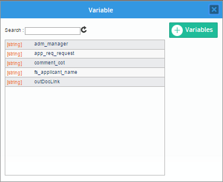
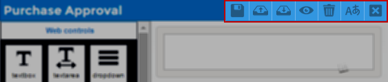
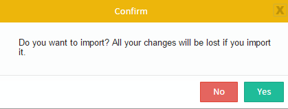
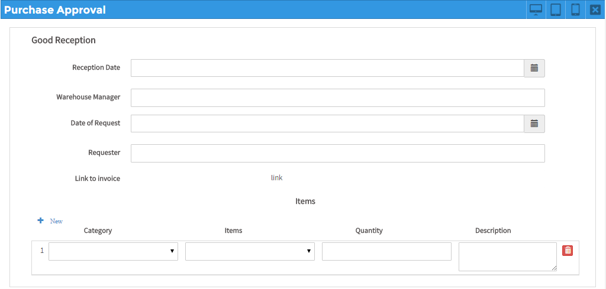
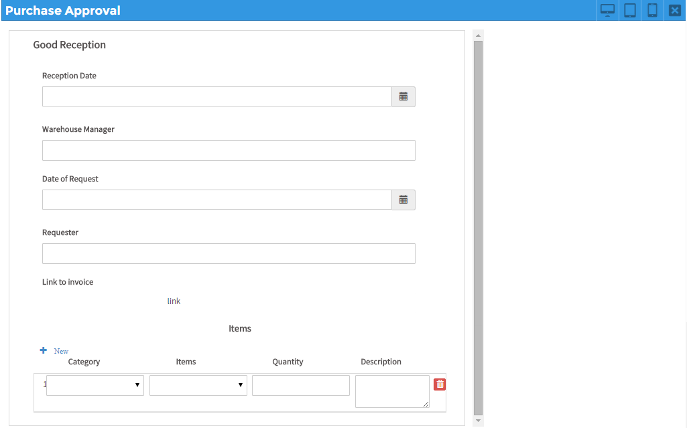
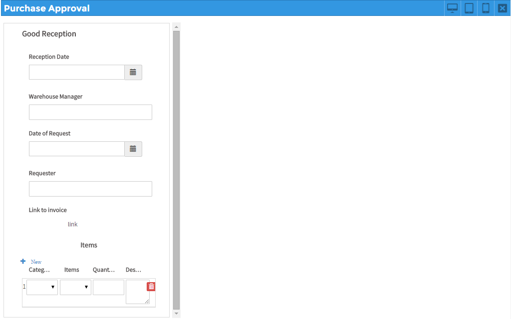

Overview
The responsive/HTML5 form designer of ProcessMaker provides a drag-and-drop multi-column tool based on jQuery, CSS3 and HTML5 by which forms may take up to twelve columns in each row, easily operate the controls and build powerful forms so much faster. Besides that, forms also have support for external libraries which, depending on the characteristics of the design, give extra functionality and behavior to controls inside forms. Moreover, by using the properties of the controls of the Dynaform, designers may add maps, videos, images, files, qr codes, etc. by simply setting the properties of controls or adding HTML/HTML5 code inside the properties of the panel control (check the enterprise features for version 3.0).
Also, as a feature of ProcessMaker version 3.0, the forms created inside the designer have the multi-language support which gives designers the ability to download a .po file with the labels used inside the form, make the corresponding translations to any language and use them later inside the same form without having to create a new one.
The designer uses global variables created within the process for building forms. Also, from version 3.0.1, it is possible to create those variables inside the properties of the control, using the Variable property. ProcessMaker has created an interface that allows users define these variables, add options and define the data type.
The responsive Dynaform designer comes with the following controls that may be directly related to the variables created in the project:
- Text
- Textarea
- DateTime
- Dropdown
- Checkbox ans Checkgroup
- Radiogroup
- Suggest
- Hidden
- Grid
- File **
- SubForm **
- Geomap *
- QR Code *
* Mobile Controls.
** These control can be related to variables from version 3.0.1.5
Also, the controls that do not need any variable related in the design:
- Title
- Subtitle
- Label
- Link
- Image
- Submit
- Button
- Panel
- Form
- Row
- Signature *
- Image *
- Audio *
- Video*
* Mobile Controls
Each control available has different properties that give the form major functionality and allows users defining the scope of the control. The functionality of these controls and their properties is explained in their corresponding documentation. Furthermore, the "Preview" (render) option works with bootstrap which is based on CSS3 and mediaQuery. This option allows graphically viewing the final design of the form as this will be shown to the final user when running a case. The user interface is "responsive" meaning that it will automatically adjust for different screen sizes such as desktop, tablets and smartphones.
The HTML5/responsive designer does not include the following features:
- XML editor: Unlike the old designer used in versions 2.5.x and earlier, the XML editor is not included in the new form designer because it is based on json, moreover this form designer is HTML5/Responsive and its code is automatically generated.
- HTML editor
- Conditions editor
- Print Dynaform
- Modifications based on themes.
Characteristics of the Designer
Note: The new Dynaform designer uses global variables to create fields. Check this documentation to learn how to create and manage global variables.
To access the designer, first create a HTML5/Responsive Dynaform . After saving it, select the option "Edit" which will open the Dynaform within the new responsive designer. When opening the Dynaform for the first time, the designer looks like the following figure:

Dynaform Title

The title of a Dynaform is the name with which it was first created and is shown in the upper left-hand side of the window. To change the title of the Dynaform click on the light gray canvas of the main container and enter the new name inside the field "Name" in the properties of the Form.

Main Container
The main container is the panel where the content of the form is built. Said container is assembled by the form and the rows which may take up one to twelve columns along with the controls related to each of these columns.

The management of the container is intuitive for any user could easily use it. The elements (controls) are easily added and moved within the design dragging and dropping them at any position needed.
Properties
In the canvas of the form, each of the rows added and all controls have properties that allow designers giving major functionality to each of these elements. For example, if a .pdf file must be attached to the form, designers have the ability to enable the file extensions property so the validation of the file is made before it is attached to the field.
The panel of properties is located at the lower left side of the designer. It is also displayed each time an element inside the main container is selected.

To edit the properties of the Dynaform, click on the grey border around the form and its properties will be displayed in the sidebar:

Adding a Control to a Dynaform
To add a control to the Dynaform design follow the steps described below.
Step 1. Go to the left panel, to the list of controls, and select one of the controls to be added in the form.

Step 2. Take the control with the mouse and drag it to a row inside the form. The available cells of the row will be highlighted in darker gray. In the picture below, the control is the first to be added to the form.

Step 3. Release the control inside the cell and another row will be added below.

To rearrange the rows with the controls already added in the designer, click on the blank space of the row:

Point the mouse cursor over the option  , click on it, hold it without releasing the button of the mouse, and move it to its new position. Note that when moving the control between rows, new cells are enabled (in the figure below the new row has been enabled, highlighted with a dark gray background color).
, click on it, hold it without releasing the button of the mouse, and move it to its new position. Note that when moving the control between rows, new cells are enabled (in the figure below the new row has been enabled, highlighted with a dark gray background color).

Finally, release the control in its new position.

Note: To move only the control from one row to another, simply drag and drop it to its new position. Take into account that the row where it will be moved must be already included in the design.
Deleting a Control
To delete a control from the design, click on it and the 'X' button appears at the upper right side of the control:

Click on this button and the control will be deleted from the row. To delete the entire row view click on the blank space of the row and the 'X' option will enable.

Click on it and the row will be deleted from the designer.
Relating a Variable with a Control
To relate a variable with a control added in the Dynaform, go to the "Variable" property of the control.

Click on the ... icon and a window with the available variables for the control will be shown.

Select the variable from the list and the window will close. The variable, data type, and the id of the control will be related to the selected variable.
Also from version 3.0.1 there is the option to directly create the variable from this window by clicking on the "Create" option and the window where variables are created will open. Check this section to learn how to create variables.
To un relate the variable to the control click on the 'X' option at the right side of the name of the variable. To change the variable related to the control click on the name of the variable and the window with the list of variables will display again.
To learn more about the "Variable", "Data Type", "Id", and all the properties of the controls available in the designer check this documentation.
Dynaform Menu
The actions available to work with the Dynaform designer are located at the upper right-hand corner of the designer.

Each one of these options and their functionality is explained next.
Save
Click on this button to save change made to the Dynaform in the designer. Take into account that the designer automatically saves changes made in the designer when viewing the Dynaform in the "Preview". After saving the form, a flash message is shown in the upper part of the window indicating the the Dynaform has been saved successfully.
Export
From version 3 of ProcessMaker, this option downloads the json format of the Dynaform in a .json file which contains the entire definition of the form. To learn more about take a look at this documentation.
Import
This option imports and replaces the current design of the Dynaform for the definition of a .json file that contains the definition of an exported Dynaform. Click on this option and if there are controls added in the design a message box opens:

Click on "No" to close the message box and return to the designer. Click "Yes" to close the message box and select the .json file that will replace the current design with the definition of the Dynaform inside it. If there were no elements added already in the design, the "select" window will open to select the file and upload the content.
Take into account that the changes made inside the designer can not be undone so be careful when replacing the entire design of a Dynaform. To learn more about the import of Dynaforms take a look at this documentation.
Preview
Note: Take into consideration the Dynaform designer does not execute SQL or JavaScript queries. To pre-visualize this kind of behavior, use the Preview (render) option.
Click on this option to render the design and view how the Dynaform will appear to the end user when running cases. The following actions can be tested in this mode:
- Required fields.
- Datetime fields
- JavaScript execution
- Desktop, Tablet, Smartphone views.
The Dynaform renders by default inside the "Desktop" option:

Click on "Tablet" to view how it will look like inside those devices:

Click on "Smartphone" to view how it will look like inside those devices:

To go back to editing the Dynaform, click on the X icon located at the upper right-hand side of the Preview.
Note: Take into account that the preview of Tablets and Smartphones is not the same final view that the form will have if using the ProcessMaker Mobile application since the last one uses specific webkits to render the controls of the form which makes it work different from the technologies used in the web edition. For example, if using the web app, the form shown above will look like:

Clear Form
Click on this option to empty the main container and leave it blank to start adding new controls. A message box opens to confirm that the form will be emptied.
Select "Accept" to empty the container or select "Cancel" to close the message and return to the designer. To close the message box and return to the designer, click on the x that is in the top right of the window.
Language
As explained in the "Overview" section of this document, the designer of ProcessMaker version 3 has the ability to generate a .po file that contains the labels set in the elements of the Dynaform in the default language (generally English) and allows creating new .po files with the translations of these languages in as many languages as needed. The translation files can be later uploaded in the Dynaform and be used just by setting the language property of the form.
To learn more about how to download, generate the translation file, upload and set the translations files check this documentation of the multi-language support.
Close
If changes made inside the designer have been saved, it just closes the designer. If changes have not been saved a message box opens. Click "Save" to save the changes and close the designer or click "Do not Save" to discard recent changes and close the designer. To close the message box and return to the designer, click on the x that is in the top right of the window.